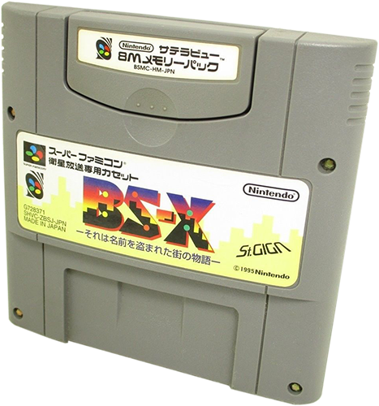
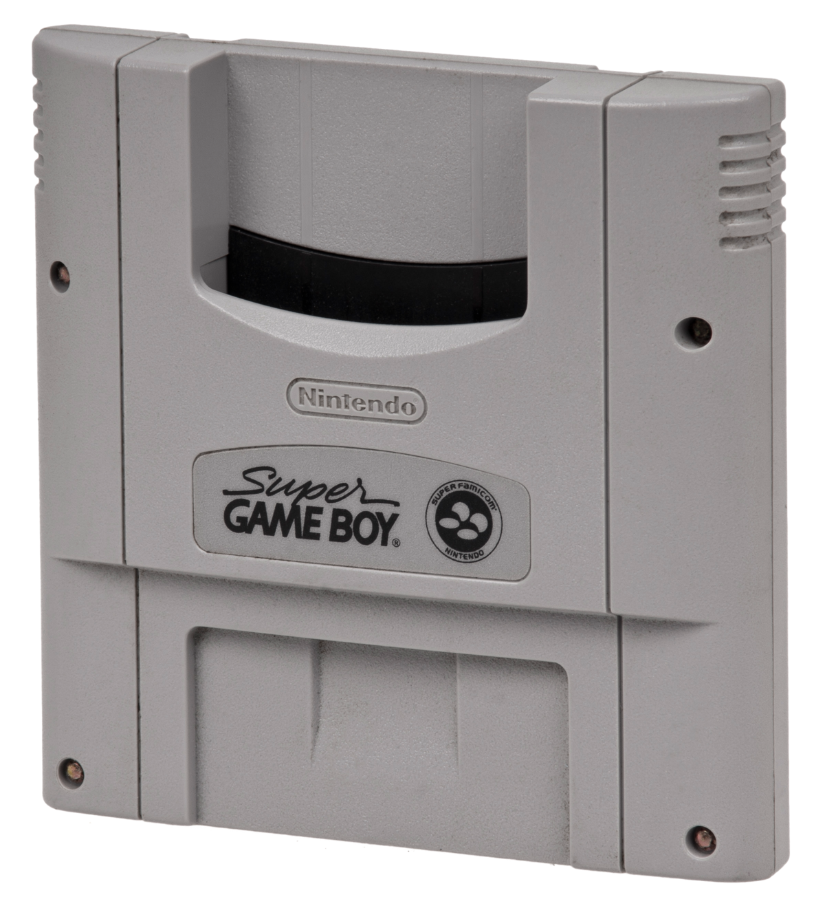
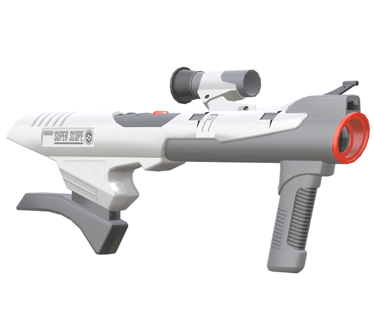

Welcome to my webpage! This is meant to be a quiz over the Super Nintendo Entertainment System that was introduced in Japan (as the Super Famicom) in 1990 and later in the United States in 1991. Here, you will answer three different questions regarding the console and see if you can get the highest score! Below is a link to the Wikipedia page about the history of the SNES!
Learn more about Nintendo's Super Entertainment System here!
Q1: Which hardware add-on was a Japanese exclusive device that connected to satellite radio to install what could be considered to be an early predecessor to DLC (Downloadable Content)?
A. Satellaview

B. Super Gameboy

C. Superscope

Q2: The cartridge typically has a tendency to yellow, which gives it a unique color commonly found in antique electronics. What plastic is the cartridge created from that has this property?
A. Polyvinyl Chloride (PVC)
B. Acrylonitrile-Butadiene-Styrene (ABS)
C. Polymethyl Methacrylate (PMMA)
Q3: The major selling point of the console over its predecessor was its special FX chip that could "seemingly" render 3D graphics by holding a "z-value" for its 2D sprite. This is only possible due to the chip upgrades! Which one is the most commonly used?